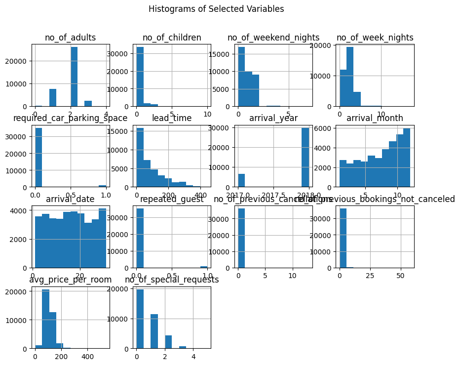

# importing main libraries
import pandas as pd
import numpy as np
import matplotlib.pyplot as plt
import seaborn as sns
import matplotlib.pyplot as plt
from scipy.stats import ttest_ind
import warnings
from sklearn.feature_selection import VarianceThreshold
warnings.filterwarnings("ignore")1. Introduction
2. Data Set
2.1 Hotel Reservation Data set
3. Data Recognition
As the first step, we need to import the main libraries to start analysis.
3.1 Loading Data
To use data, we need to import them and read the data. In this case, our data is CSV files, and it is in the folder whose name is data.
df = pd.read_csv('data\HotelReservations.csv')
df.head() | Booking_ID | no_of_adults | no_of_children | no_of_weekend_nights | no_of_week_nights | type_of_meal_plan | required_car_parking_space | room_type_reserved | lead_time | arrival_year | arrival_month | arrival_date | market_segment_type | repeated_guest | no_of_previous_cancellations | no_of_previous_bookings_not_canceled | avg_price_per_room | no_of_special_requests | booking_status | |
|---|---|---|---|---|---|---|---|---|---|---|---|---|---|---|---|---|---|---|---|
| 0 | INN00001 | 2 | 0 | 1 | 2 | Meal Plan 1 | 0 | Room_Type 1 | 224 | 2017 | 10 | 2 | Offline | 0 | 0 | 0 | 65.00 | 0 | Not_Canceled |
| 1 | INN00002 | 2 | 0 | 2 | 3 | Not Selected | 0 | Room_Type 1 | 5 | 2018 | 11 | 6 | Online | 0 | 0 | 0 | 106.68 | 1 | Not_Canceled |
| 2 | INN00003 | 1 | 0 | 2 | 1 | Meal Plan 1 | 0 | Room_Type 1 | 1 | 2018 | 2 | 28 | Online | 0 | 0 | 0 | 60.00 | 0 | Canceled |
| 3 | INN00004 | 2 | 0 | 0 | 2 | Meal Plan 1 | 0 | Room_Type 1 | 211 | 2018 | 5 | 20 | Online | 0 | 0 | 0 | 100.00 | 0 | Canceled |
| 4 | INN00005 | 2 | 0 | 1 | 1 | Not Selected | 0 | Room_Type 1 | 48 | 2018 | 4 | 11 | Online | 0 | 0 | 0 | 94.50 | 0 | Canceled |
df.shape(36275, 19)With this function, we check all culmns and their type.
# getting data on dataset
df.info()<class 'pandas.core.frame.DataFrame'>
RangeIndex: 36275 entries, 0 to 36274
Data columns (total 19 columns):
# Column Non-Null Count Dtype
--- ------ -------------- -----
0 Booking_ID 36275 non-null object
1 no_of_adults 36275 non-null int64
2 no_of_children 36275 non-null int64
3 no_of_weekend_nights 36275 non-null int64
4 no_of_week_nights 36275 non-null int64
5 type_of_meal_plan 36275 non-null object
6 required_car_parking_space 36275 non-null int64
7 room_type_reserved 36275 non-null object
8 lead_time 36275 non-null int64
9 arrival_year 36275 non-null int64
10 arrival_month 36275 non-null int64
11 arrival_date 36275 non-null int64
12 market_segment_type 36275 non-null object
13 repeated_guest 36275 non-null int64
14 no_of_previous_cancellations 36275 non-null int64
15 no_of_previous_bookings_not_canceled 36275 non-null int64
16 avg_price_per_room 36275 non-null float64
17 no_of_special_requests 36275 non-null int64
18 booking_status 36275 non-null object
dtypes: float64(1), int64(13), object(5)
memory usage: 5.3+ MB4. Data Pre-processing
This process is beneficial for several reasons. Reducing dimensionality, improving computational efficiency and enhancing model performance. In the pre-processing step, dimension reduction, outlier detection and missing value handling were conducted.
4.1. Dropping unnecessary columns and rows:
Dropping unnecessary columns and rows is a data preprocessing step that involves removing specific columns or rows from a dataset that are deemed unnecessary for the analysis or modeling task at hand. We selected the best columns using the feature selection algorithm and we will obtain the accuracy of the model before and after that.
4.2. Checking missing values
In most cases, we do not get complete datasets. They either have some missing values in the rows and columns. However, fortunately, we check whether the dataset has any missing values or not, and as you can see in the output of the block below, there is no missing value in this dataset
# Drop rows with null values
df = df.dropna()
df.info()
df.shape<class 'pandas.core.frame.DataFrame'>
RangeIndex: 36275 entries, 0 to 36274
Data columns (total 19 columns):
# Column Non-Null Count Dtype
--- ------ -------------- -----
0 Booking_ID 36275 non-null object
1 no_of_adults 36275 non-null int64
2 no_of_children 36275 non-null int64
3 no_of_weekend_nights 36275 non-null int64
4 no_of_week_nights 36275 non-null int64
5 type_of_meal_plan 36275 non-null object
6 required_car_parking_space 36275 non-null int64
7 room_type_reserved 36275 non-null object
8 lead_time 36275 non-null int64
9 arrival_year 36275 non-null int64
10 arrival_month 36275 non-null int64
11 arrival_date 36275 non-null int64
12 market_segment_type 36275 non-null object
13 repeated_guest 36275 non-null int64
14 no_of_previous_cancellations 36275 non-null int64
15 no_of_previous_bookings_not_canceled 36275 non-null int64
16 avg_price_per_room 36275 non-null float64
17 no_of_special_requests 36275 non-null int64
18 booking_status 36275 non-null object
dtypes: float64(1), int64(13), object(5)
memory usage: 5.3+ MB(36275, 19)# Checking for missing values in the entire dataset
missing_values = df.isnull().sum()
# Printing the result
print(missing_values)Booking_ID 0
no_of_adults 0
no_of_children 0
no_of_weekend_nights 0
no_of_week_nights 0
type_of_meal_plan 0
required_car_parking_space 0
room_type_reserved 0
lead_time 0
arrival_year 0
arrival_month 0
arrival_date 0
market_segment_type 0
repeated_guest 0
no_of_previous_cancellations 0
no_of_previous_bookings_not_canceled 0
avg_price_per_room 0
no_of_special_requests 0
booking_status 0
dtype: int644.3 Checking for garbage values
Garbage value is generally a term meaning that the value in a variable which means nothing. By checking the statistical information of the data, some variables have negative values, and some have 0 values which are not compatible with the definition (corresponding to the dataset). The detail of these values is given in the following tables: *** Negative Values and Ziro for deleting *** Using this code, we check the data for minus and zero values if they are not compatible by the meaning they have.
::: {.cell execution_count=25} {.python .cell-code} # get name the columns df.columns
::: {.cell-output .cell-output-display execution_count=25} Index(['Booking_ID', 'no_of_adults', 'no_of_children', 'no_of_weekend_nights', 'no_of_week_nights', 'type_of_meal_plan', 'required_car_parking_space', 'room_type_reserved', 'lead_time', 'arrival_year', 'arrival_month', 'arrival_date', 'market_segment_type', 'repeated_guest', 'no_of_previous_cancellations', 'no_of_previous_bookings_not_canceled', 'avg_price_per_room', 'no_of_special_requests', 'booking_status'], dtype='object') ::: :::
# Checking the negative values of no_of_adults
df['no_of_adults'].value_counts()
#df['no_of_children'].value_counts()
#df['no_of_weekend_nights'].value_counts()no_of_adults
2 26108
1 7695
3 2317
0 139
4 16
Name: count, dtype: int64As shown above, there are no undefined values in each variables. Therefore, we omit no cases.
4.4 Checking the distribution of each variable
Checking the distribution of each variable involves examining the spread and pattern of values within individual columns or features in the dataset. Understanding the distribution helps you gain insights into the central tendencies, variability, and shape of the data. This is crucial for making informed decisions during data analysis and modeling. Common statistical measures used to describe the distribution include mean, median, and standard deviation. .
# check the distribution for each column
df.describe().T| count | mean | std | min | 25% | 50% | 75% | max | |
|---|---|---|---|---|---|---|---|---|
| no_of_adults | 36275.0 | 1.844962 | 0.518715 | 0.0 | 2.0 | 2.00 | 2.0 | 4.0 |
| no_of_children | 36275.0 | 0.105279 | 0.402648 | 0.0 | 0.0 | 0.00 | 0.0 | 10.0 |
| no_of_weekend_nights | 36275.0 | 0.810724 | 0.870644 | 0.0 | 0.0 | 1.00 | 2.0 | 7.0 |
| no_of_week_nights | 36275.0 | 2.204300 | 1.410905 | 0.0 | 1.0 | 2.00 | 3.0 | 17.0 |
| required_car_parking_space | 36275.0 | 0.030986 | 0.173281 | 0.0 | 0.0 | 0.00 | 0.0 | 1.0 |
| lead_time | 36275.0 | 85.232557 | 85.930817 | 0.0 | 17.0 | 57.00 | 126.0 | 443.0 |
| arrival_year | 36275.0 | 2017.820427 | 0.383836 | 2017.0 | 2018.0 | 2018.00 | 2018.0 | 2018.0 |
| arrival_month | 36275.0 | 7.423653 | 3.069894 | 1.0 | 5.0 | 8.00 | 10.0 | 12.0 |
| arrival_date | 36275.0 | 15.596995 | 8.740447 | 1.0 | 8.0 | 16.00 | 23.0 | 31.0 |
| repeated_guest | 36275.0 | 0.025637 | 0.158053 | 0.0 | 0.0 | 0.00 | 0.0 | 1.0 |
| no_of_previous_cancellations | 36275.0 | 0.023349 | 0.368331 | 0.0 | 0.0 | 0.00 | 0.0 | 13.0 |
| no_of_previous_bookings_not_canceled | 36275.0 | 0.153411 | 1.754171 | 0.0 | 0.0 | 0.00 | 0.0 | 58.0 |
| avg_price_per_room | 36275.0 | 103.423539 | 35.089424 | 0.0 | 80.3 | 99.45 | 120.0 | 540.0 |
| no_of_special_requests | 36275.0 | 0.619655 | 0.786236 | 0.0 | 0.0 | 0.00 | 1.0 | 5.0 |
Using this code, the most important statistical information of each numeric predictiors are calculated.
df_numeric = df.select_dtypes(include=np.number)
df_numeric.shape(36275, 14)# finding zero variance variables
selector_vr= VarianceThreshold(threshold=0)
#selector_vr.fit_transform(df_numeric)
#selector_vr.get_support(indices=True)If there are variables with standard deviation near the zero , we can delete it .
df.head()
df.columnsIndex(['Booking_ID', 'no_of_adults', 'no_of_children', 'no_of_weekend_nights',
'no_of_week_nights', 'type_of_meal_plan', 'required_car_parking_space',
'room_type_reserved', 'lead_time', 'arrival_year', 'arrival_month',
'arrival_date', 'market_segment_type', 'repeated_guest',
'no_of_previous_cancellations', 'no_of_previous_bookings_not_canceled',
'avg_price_per_room', 'no_of_special_requests', 'booking_status'],
dtype='object')Now, we check the categorical variables and their categories to show the frequency of each values.
Histograms are useful for analyzing the frequency distribution of different values for each variable. In each histogram, the horizontal axis represents the variable values, and the vertical axis indicates the frequency or the number of times each value appears in the data. The height of each column reflects the frequency or the number of samples with a specific value in that interval.
# Specify the columns you want to include in the analysis
selected_columns = ['Booking_ID', 'no_of_adults', 'no_of_children', 'no_of_weekend_nights',
'no_of_week_nights', 'type_of_meal_plan', 'required_car_parking_space',
'room_type_reserved', 'lead_time', 'arrival_year', 'arrival_month',
'arrival_date', 'market_segment_type', 'repeated_guest',
'no_of_previous_cancellations', 'no_of_previous_bookings_not_canceled',
'avg_price_per_room', 'no_of_special_requests', 'booking_status']
# Create a DataFrame containing only the selected columns
selected_df = df[selected_columns]
# Plot histograms for each variable
selected_df.hist(figsize=(10, 8))
plt.suptitle('Histograms of Selected Variables')
plt.show()
# Displaying some statistics about categorical data
df.describe(include='object')| Booking_ID | type_of_meal_plan | room_type_reserved | market_segment_type | booking_status | |
|---|---|---|---|---|---|
| count | 36275 | 36275 | 36275 | 36275 | 36275 |
| unique | 36275 | 4 | 7 | 5 | 2 |
| top | INN00001 | Meal Plan 1 | Room_Type 1 | Online | Not_Canceled |
| freq | 1 | 27835 | 28130 | 23214 | 24390 |
4.5 Data Transformation
4.5.1 Transforming the categorical variables
In this step, we numerized object variables . As it mentioned earlier, booking_status and target has two object:Not_Canceled , Canceled . For efficient use in the models, we convert Canceled to 1 and Not_Canceled to 0. If we have a column that is object or if we have Boolean, we can convert them to integer. In this stage I use the new data frame for own data with own selected column for better decision in the following steps.
df.describe()| no_of_adults | no_of_children | no_of_weekend_nights | no_of_week_nights | required_car_parking_space | lead_time | arrival_year | arrival_month | arrival_date | repeated_guest | no_of_previous_cancellations | no_of_previous_bookings_not_canceled | avg_price_per_room | no_of_special_requests | |
|---|---|---|---|---|---|---|---|---|---|---|---|---|---|---|
| count | 36275.000000 | 36275.000000 | 36275.000000 | 36275.000000 | 36275.000000 | 36275.000000 | 36275.000000 | 36275.000000 | 36275.000000 | 36275.000000 | 36275.000000 | 36275.000000 | 36275.000000 | 36275.000000 |
| mean | 1.844962 | 0.105279 | 0.810724 | 2.204300 | 0.030986 | 85.232557 | 2017.820427 | 7.423653 | 15.596995 | 0.025637 | 0.023349 | 0.153411 | 103.423539 | 0.619655 |
| std | 0.518715 | 0.402648 | 0.870644 | 1.410905 | 0.173281 | 85.930817 | 0.383836 | 3.069894 | 8.740447 | 0.158053 | 0.368331 | 1.754171 | 35.089424 | 0.786236 |
| min | 0.000000 | 0.000000 | 0.000000 | 0.000000 | 0.000000 | 0.000000 | 2017.000000 | 1.000000 | 1.000000 | 0.000000 | 0.000000 | 0.000000 | 0.000000 | 0.000000 |
| 25% | 2.000000 | 0.000000 | 0.000000 | 1.000000 | 0.000000 | 17.000000 | 2018.000000 | 5.000000 | 8.000000 | 0.000000 | 0.000000 | 0.000000 | 80.300000 | 0.000000 |
| 50% | 2.000000 | 0.000000 | 1.000000 | 2.000000 | 0.000000 | 57.000000 | 2018.000000 | 8.000000 | 16.000000 | 0.000000 | 0.000000 | 0.000000 | 99.450000 | 0.000000 |
| 75% | 2.000000 | 0.000000 | 2.000000 | 3.000000 | 0.000000 | 126.000000 | 2018.000000 | 10.000000 | 23.000000 | 0.000000 | 0.000000 | 0.000000 | 120.000000 | 1.000000 |
| max | 4.000000 | 10.000000 | 7.000000 | 17.000000 | 1.000000 | 443.000000 | 2018.000000 | 12.000000 | 31.000000 | 1.000000 | 13.000000 | 58.000000 | 540.000000 | 5.000000 |
#using Map Function
df2 = df.copy()
# Ordinal Encoding for booking_status: 1 for 'Canceled', 0 for 'Not_Canceled'
ordinal_map = {'Canceled': 1, 'Not_Canceled': 0}
df2['booking_status'] = df2['booking_status'].map(ordinal_map)
df2['booking_status'] = df2['booking_status'].astype(int)We check again the structure of the dataframe.
#df2.info()
#df2.head()
#df2.shape
unique_values = df2['type_of_meal_plan'].unique()
print(unique_values)['Meal Plan 1' 'Not Selected' 'Meal Plan 2' 'Meal Plan 3']# Get unique values in the column
unique_values = df2['booking_status'].unique()
print(unique_values)[0 1]